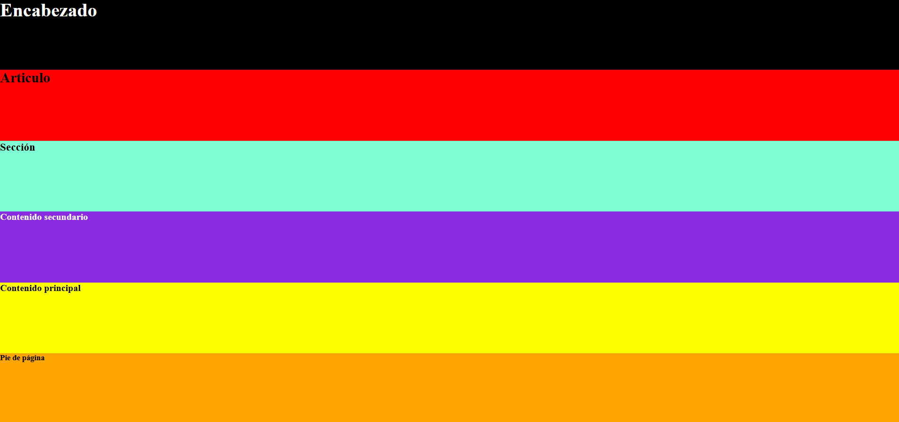
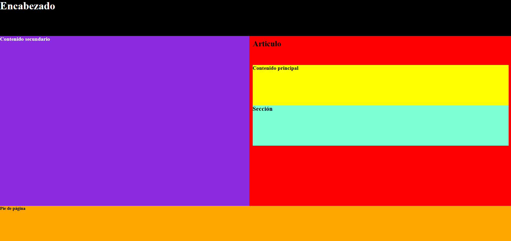
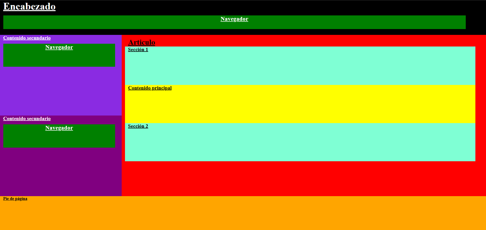
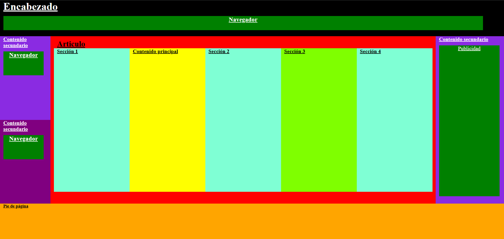

A partir de las siguientes imagenes proporcionadas, debe escribir tus coumentos HTML y CSS.




Cada maquetación se realizará en una carpeta independiente, denominadas maquetacion1, maquetacion2, maquetacion3 y maquetacion4. Dentro de cada carpeta deberán encontrarse los archivos index.html y style.css correspondientes a esa maquetación, manteniendo cada proyecto independiente de los demás.
maquetacion1
maquetacion2
maquetacion3
maquetacion4
index.html
style.css
Al interpretar cada documento en el navegador, no deberá generarse ningún tipo de scroll, ni vertical ni horizontal. La totalidad de los elementos que componen cada maquetación deberá ocupar el 100% de la ventana visible, por lo que se deberán utilizar unidades de medida dinámicas, vw y vh, para adaptar las dimensiones y distribución de los elementos al tamaño disponible.
vw
vh